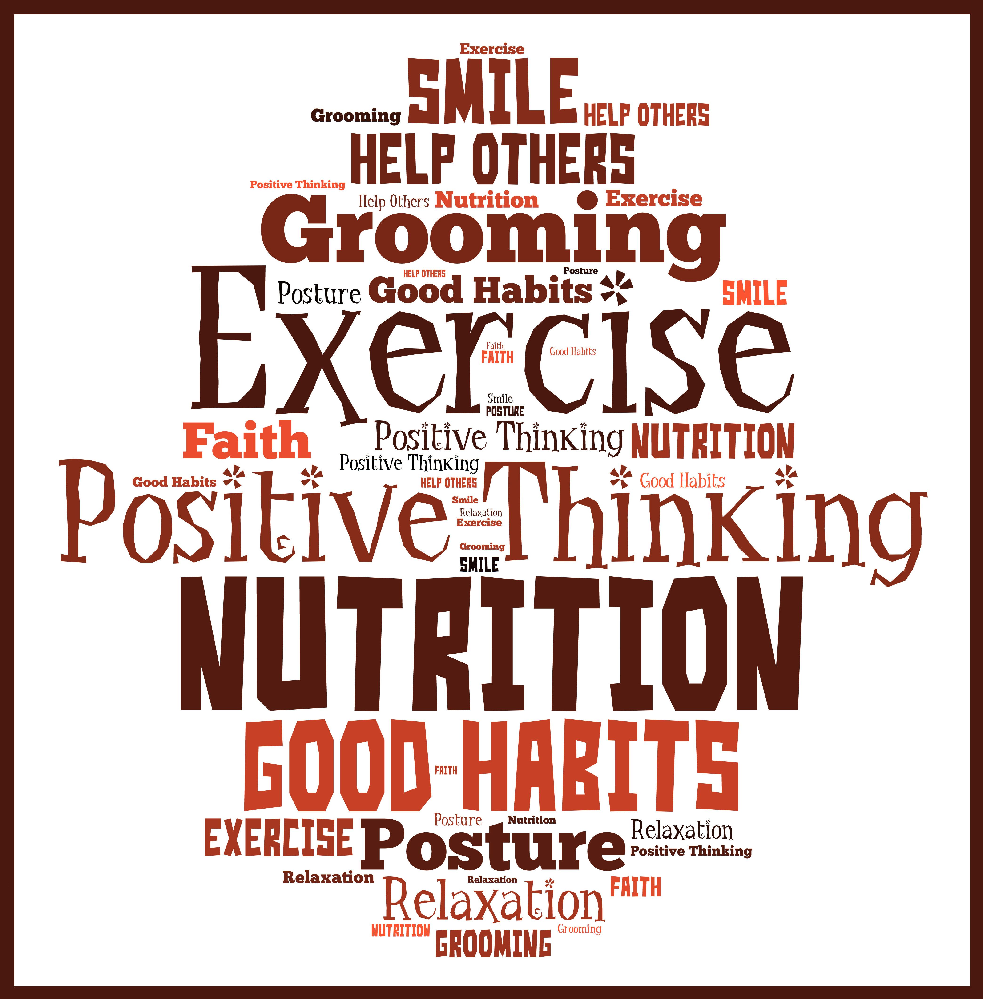
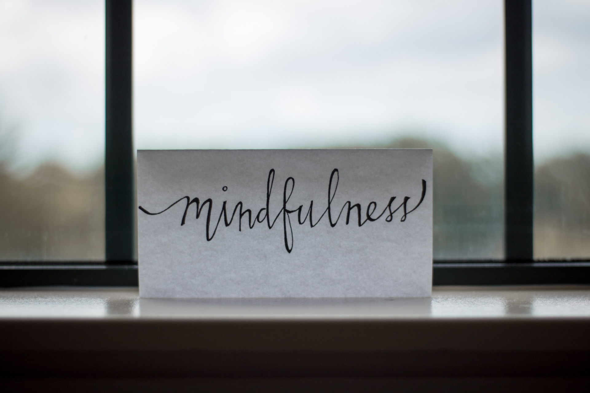

Gradual Pace
There are no quick fixes when it comes to self-improvement. Focus on self-improvement approaches that involve a gradual change to increase your odds of success.1 These approaches typically have you focus on one change at a time, and you only move on to the next change when you've become comfortable with the earlier change in your life.
For example, simply planning to go to the gym three times a week to improve your mental health might feel like too big of a step at the beginning. Instead, a gradual plan might have you choose clothes to wear to the gym, choose days and times you will go, and plan out your workouts in advance so that you don't feel overwhelmed once you get there.
Another way self-improvement can be gradual is to think of the smallest change that you can make in a positive direction, or how to improve by just one percent at a time. For example, if you want to become a more social person, you might make a point of introducing yourself to one new person each month.
An even better change to implement would be one that does not require ongoing effort from you but rather a one-time implementation—for example, joining a club that meets every Wednesday means getting out and being social without having to put effort into figuring out new plans and new people to meet every week or month.
Goal-Oriented
There is little point in embarking on a self-improvement quest if you don't have a goal in mind. However, it is important that you choose a goal that is compelling for you and that also feels attainable.
This often means starting with a big, "dream" goal and working backward from there to identify smaller goals along the path toward that big goal. Having a set of goals will keep you motivated at times that you feel like quitting
When Julian Rotter started developing his social learning theory, he refused to embrace the ideologies of Freudian Psychoanalysis, which was the dominating viewpoint of the circle of psychologists during his time. Instead, he utilized the law of effect, wherein people are being driven to pursue positive reinforcement and to avert negative reinforcement. According to his theory, personality and behaviorism are not connected by our physiological instincts and drives.

Accountability
The best self-improvement plans will involve a commitment on your part. The ideal way to set that commitment is to write it down or make a verbal promise to someone close to you—an accountability partner of sorts.
Below is an example of an accountability statement:
"I am making a commitment to my mental health by meditating for five minutes each morning and repeating a positive affirmation to myself after the meditation is complete. This is part of a larger goal I have to include more mindfulness in my life. I want to do this to help prepare myself for each day, to remind myself that I am capable of achieving what I want, and to reduce stress."
Rewards for Success
Obstacles will always arise when you have made plans and goals. Staying on track requires identifying the obstacles that you are likely to face and having a plan to deal with them.
In this way, the best self-improvement approaches incorporate awareness that things will not always go smoothly and that you must be able to adjust accordingly. They will also have you list out coping strategies to deal with those obstacles in a concrete way.
Rewards for Success
Beyond the reward of improving yourself, many self-improvement approaches incorporate some form of reward for behavior.
A common example would be rewarding weight loss with a non-food reward; in the area of mental wellness, rewards for sticking to a self-help regime could include anything that motivates you—it is up to you to figure out what that is.
Evidence-Based
Perhaps most importantly, the healthiest self-improvement approaches will be grounded in research evidence. While it may be tempting to follow "gurus" who promise miracle cures, approaches that have been backed by well-controlled research trials are the ones most likely to show a benefit.
If you are interested in learning more about changes you can make based on research evidence, Richard Wiseman's book 59 Seconds converts research into practice with tips on how to change your life in under a minute.

Unless you are working with a therapist or coach, it will be up to you to make a plan for your self-improvement. This is hard to do if you don't first have self-awareness about what is wrong and what you are trying to change.
Self Awareness
Unless you are working with a therapist or coach, it will be up to you to make a plan for your self-improvement. This is hard to do if you don't first have self-awareness about what is wrong and what you are trying to change.
Usually, self-awareness takes place in three areas: physical, cognitive, and emotional. When you are able to recognize the areas in which you are struggling, and have compassion for yourself, you will be better able to make a plan for change. In this way, the healthiest self-improvement plans will involve a step in which you sit down and get self-aware.
For example, if you struggle with disorganization in your life, before embarking on a plan for self-improvement, you might want to identify the thoughts you have (e.g., I am a messy person), how they make you feel (e.g., I will never get organized), and how that plays out for you physically (e.g., I feel tired all the time, I am lacking the energy to get started).
A Word From Verywell
In addition to the above ten qualities of a healthy self-improvement approach, the plan that you develop should always allow for readjustment along the way. By reflecting on past successes and mistakes, you will be able to evaluate what went well and what went wrong, how you can do things differently in the future, and where you still have room for growth.
Finally, remember that any movement in a positive direction is progress no matter how small or how long it takes. It is better to follow a plan for self-improvement that has the above qualities and takes a bit more time than to try for a quick cure. The time and effort you invest will be rewarded in the end.